Historia del fútbol
La historia del fútbol asociación, conocido simplemente como fútbol, suele considerarse a partir de 1863, año de fundación de The Football Association, aunque sus orígenes, al igual que los de los demás códigos de fútbol, se pueden remontar varios siglos en el pasado, particularmente en las Islas Británicas durante la Edad Media. Si bien existían puntos en común entre diferentes juegos de pelota que se desarrollaron desde el siglo III a. C. y el fútbol actual,1 el deporte tal como se lo conoce hoy tiene sus orígenes en las Islas Británicas.

Los primeros códigos británicos que dieron origen al fútbol asociación se caracterizaban por su poca organización y violencia extrema. No obstante, también existían otros códigos menos violentos y mejor organizados: quizás uno de los más conocidos fue el calcio florentino, deporte de equipo muy popular en Italia que tuvo incidencia en los códigos de algunas escuelas británicas. La formación definitiva del fútbol asociación tuvo su momento culminante durante el Siglo XIX. En 1848 representantes de diferentes colegios ingleses se dieron cita en la Universidad de Cambridge para crear el código Cambridge, que funcionaría como base para la creación del reglamento del fútbol moderno Finalmente en 1863 en Londres se oficializaron las primeras reglas del fútbol asociación.
Desde entonces el fútbol ha tenido un crecimiento constante, hasta llegar a ser el deporte más popular del mundo con unas 270 millones de personas involucradas. Con la realización de la primera reunión de la International Football Association Board en 1886 y la fundación de la FIFA en 1904, el deporte se ha expandido hasta llegar a todos los rincones del mundo. A partir de 1930 se comenzaría a disputar la Copa Mundial de Fútbol, que se convertiría en el evento deportivo con mayor audiencia del planeta.
|
|
Orígenes
Juegos antiguos similares
La actividad más antigua que se asemeje al fútbol asociación o a algún otro código de la cual se tenga conocimiento data de los siglos III y II a. C. Estos datos se basan en un manual de ejercicios militares correspondientes a la dinastía Han de la antigua China. El juego era llamado ts'uh Kúh (también se puede encontrar como tsu chu o luju), y consistía en lanzar una pelota con los pies hacia una pequeña red. Una variante agregaba una modalidad donde el jugador debía sortear el ataque de sus rivales. También en el Lejano Oriente, aunque unos cinco o seis siglos después del juego mencionado anteriormente, existía una variante japonesa llamada kemari, la cual tenía un carácter más ceremonial, siendo el objetivo del juego mantener una pelota en el aire pasándosela entre los jugadores.
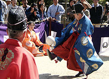En el Mediterráneo se destacaron dos formas de juegos: el harpastum en Roma y el epislcyros en Grecia, sobre el cual se tiene muy poca información. El mencionado en primer término era disputado por dos equipos en un terreno rectangular demarcado y dividido a la mitad por una línea. Los jugadores de cada equipo podían pasarse un pequeño balón entre ellos, y el objetivo era enviarlo al campo contrario. Esta variante fue muy popular entre los años 700 y 800, y a pesar de haber sido introducida en las Islas Británicas su ascendencia hacia el fútbol actual es dudosa.
Durante la Era de los descubrimientos se comenzaron a conocer deportes provenientes del Nuevo Mundo. Se estima que el pok ta pok de la cultura maya tendría 3.000 años de antigüedad. En Groenlandia también se jugaba un deporte que se asemejaba al fútbol, mientras que el juego denominado marngrook de Oceanía tenía características que lo asemejaban más al fútbol australiano. En lo que hoy es Estados Unidos los aborígenes practicaban otros juegos: el pasuckuakohowog en el área continental y el asqaqtuk en Alaska.
Si bien todos estos juegos tenían ciertas características que se asemejan al fútbol asociación y a otros códigos modernos, la incidencia de los mismos en los deportes actuales es discutible, ya que prácticamente no hay vinculación de los mismos con las Islas Británicas, el hogar del fútbol moderno.
Edad Media
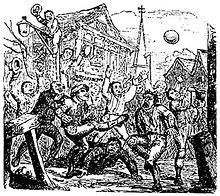Se conoce como fútbol medieval a los diferentes códigos practicados en la Europa de la Edad Media, particularmente en las Islas Británicas y zonas aledañas. El registro más antiguo de una actividad similar al fútbol moderno en la época surgió en los años 1170 de la mano de un texto de William FitzStephen, donde explicaba la realización de un juego de pelota (no se usaba la palabra fútbol) practicado por los jóvenes londinenses. La violencia de estos juegos y la necesidad de que los soldados practicaran la arquería en lugar de lo primero llevaron a que Eduardo II de Inglaterra prohibiera el juego en 1314. Desde entonces los juegos continuaron en forma ilegal.
El soule era un juego de pelota francés que se practicaba a través de los prados, los bosques, landas y hasta las villas o estanques. El fin era devolver el balón en un lugar indicado, el fogón de una casa por ejemplo. En ciertos casos, hasta había que mojar el soule en una fuente antes de alojarlo en la ceniza. El juego era pues sólo una galopada inmensa entrecortada de peleas (scroumages o mêlées) más o menos encarnizadas. El instrumento de juego podía ser una pelota de cuero, una vejiga de cerdo llena de heno, una pelota de tela o una bola de madera. Uno de los documentos más antiguos que conciernen a la soule es una ordenanza del rey Carlos V de Francia de 3 de abril de 1365, en la que precisa "que no puede figurar entre los juegos que sirven el ejercicio del cuerpo". En 1440, otra interdicción hecha por el obispo de Tréguier precisa que este juego ya se practica desde hace muchísimo tiempo y amenaza a los jugadores con la excomunión y 100 sueldos de multa, lo que prueba que la soule fue muy apreciada en aquella época: había que inspirar el miedo para terminar con el juego.
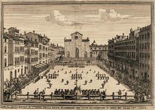El fútbol de carnaval era practicado en las Islas Británicas y estaba carente de regulación. El número de participantes por equipo era por lo general ilimitado, llegando incluso participar pueblos enteros. Prácticamente cualquier forma de trasladar el balón a la meta contraria, a veces ubicada en el pueblo rival, era válida, aunque no se permitía asesinar a otra persona. Los orígenes del fútbol de carnaval son inciertos, aunque existe una hipótesis que afirma que provenía del norte de Francia. Algunas de estas variantes se continúan practicando la época previa a la cuaresma (shrovetide en inglés), siendo una de las más conocida el Ashbourne Shrovetide Football, deporte practicado en el pueblo inglés de Ashbourne. Los equipos están conformados por personas nacidas a uno y otro lado del río Henmore, y el objetivo del juego es llevar una pelota hasta la meta contraria, un monumento de piedra ubicado en el agua, y golpear el balón 3 veces contra el mismo.
En Italia se practicaba una variante del fútbol medieval llamada calcio florentino, deporte más organizado y menos violento que sus pares británicos. El deporte tuvo sus orígenes en Florencia en el siglo XVI, siendo 1580 el año en que Giovanni Bardi presentó el primer juego de reglas. Se jugaba con dos equipos de 27 jugadores cada uno, y el objetivo era sumar más puntos que el equipo rival. Para esto se colocaba un agujero a cada lado del campo de juego, el cual era de dimensiones similares a un campo de fútbol actual, pero cubierto de arena. Utilizando cualquier parte del cuerpo se debía introducir la pelota en dichos agujeros, con lo cual se obtenían 2 puntos, pero si se fallaba el tiro se sumaba medio punto al equipo rival. El encuentro duraba 50 minutos y era controlado por 8 árbitros. Los torneos que se han disputado hasta la actualidad constan de 4 equipos, representados por ciertos colores, uno para cada zona de la ciudad. Un tratado de 1561 asegura que el deporte tuvo incidencia en una variante del fútbol de carnaval británico. En 1930 el juego se volvió a practicar tras 200 años de ausencia, esta vez como autopromoción de la cultura italiana a cargo de Benito Mussolini.
Escuelas británicas
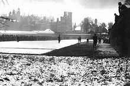Durante el siglo XVI las variantes del fútbol de carnaval, caracterizadas hasta el momento por su violencia, desorganización y constantes prohibiciones debido a los puntos antes mencionados, comenzaron a formar parte de las actividades de recreación y educación física estudiantiles de las distintas escuelas privadas de las Islas Británicas, conocidas en ese lugar como escuelas públicas, siendo supervisadas y legisladas por las autoridades escolares.
Durante los siglos XVIII y XIX los distintos colegios fueron oficializando sus juegos de reglas. Las escuelas de Rugby, Marlborough y Cheltenham desarrollaron juegos donde se permitía el uso de los pies y las manos; Shrewsbury y Winchester primaban el uso de los pies para patear y trasladar la pelota (driblear); Charterhouse disputaba sus encuentros en los claustros de los monasterios; Eton y Harrow introdujeron la disputa de encuentros en grandes terrenos al aire libre, lo cual fomentaba el lanzamiento del balón a grandes distancias utilizando los pies; Westminster (Cambridge) utilizaba un juego más rudo, donde se permitían los tackles. En 1848 varios de estos colegios se dieron cita en la Universidad de Cambridge para unificar sus códigos y crear un juego de reglas estándar: las Reglas de Cambridge.
En la primera mitad del siglo XIX se reglamentaron las primeras reglas del fuera de juego. Se podían apreciar distintas variedades de leyes, muchas de las cuales han evolucionado a las reglas actuales de off-side de varios códigos del fútbol.
De los distintos códigos escolares actualmente sólo tres colegios continúan disputando encuentros en forma regular con esas reglas: Eton, Harrow y Winchester. Eton posee dos variantes: el juego de campo, muy similar al fútbol actual aunque con aspectos del rugby como los scrums y los tries, y el juego de la pared, un deporte que se juega en un campo alargado y muy estrecho con un muro a su lado y cuyo objetivo es llevar el balón al extremo contrario. El fútbol en Harrow se juega principalmente con los pies, aunque se pueden utilizar las manos para detener el balón o para empujar a un adversario, y su objetivo es hacer pasar la pelota entre dos postes verticales ubicados en los extremos del terreno. El juego de Winchester se juega en un terreno de 73 por 24,5 metros, el cual posee redes en sus laterales para impedir que el balón abandone el campo. Combina aspectos del fútbol y el rugby, y tiene como principal característica que un jugador de un equipo no puede tocar el balón después de que haya sido tocado por un compañero.
Unificaciones del siglo XIX
A mediados del siglo XIX en Gran Bretaña comenzó un proceso regulador del fútbol de carnaval, estableciendo reglas escritas que pudieran ser compartidas ampliamente. Por entonces el fútbol era practicado entre los estudiantes de las escuelas secundarias privadas con reglas muy imprecisas que variaban considerablemente de escuela a escuela. En algunas escuelas se podía correr con la pelota en las manos, mientras en otras no; en algunas había una línea de fuera de juego, pero en otras no; en algunas se podía tomar, placar (tacklear) y patear al jugador contrario, pero en otras no; algunas promovían un juego más grupal basado en el pase, incluido el pase hace adelante (pass forward), mientras otras promovían un juego más individual basado en la habilidad (dribbling, regate o gambeta) y la fuerza de cada jugador. Y en cada escuela existían infinitas variantes y modificaciones.
En los años 1840 Gran Bretaña tuvo un gran desarrollo de su red ferroviaria que permitió a las personas trasladarse a mayores distancias. Este proceso hizo posible la realización de competencias intercolegiales, pero al poco tiempo se hizo evidente que era necesario unificar las reglas, porque aunque las mismas solían acordarse antes de cada encuentro, ello no lograba evitar los reclamos y discusiones sobre lo que se podía y lo que no se podía hacer.
Si bien las leyes del fútbol asociación fueron oficializadas en 1863, las reglas de Cambridge fueron tomadas como base para la creación del código actual.5 Otro reglamento popular en la época, las reglas de Sheffield, también aportó características importantes al nuevo deporte.
Reglas de Cambridge
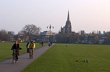Los registros de la práctica de diferentes códigos de fútbol en la Universidad de Cambridge se remontan al año 1579. Desde entonces hasta mediados del siglo XIX cada equipo de la zona disputaba sus partidos con su propio juego de reglas. Fue en 1848 cuando dos estudiantes de la universidad, Henry de Winton y John Charles Thring, hicieron un llamado a miembros de otras escuelas para definir un único juego de reglas: las reglas de Cambridge, creadas junto al University Foot Ball Club.5 27 Aparte de Cambridge, también participaron Eton, Harrow, Winchester, Shrewsbury y Rugby. Actualmente no se conserva ninguna copia de las reglas de 1848, aunque todavía existe una que corresponde a 1856, posiblemente diferente en cuanto a contenido, que se conserva en Shrewsbury.
Las reglas de Cambridge fueron tomadas como base para la creación del fútbol asociación y de la Football Association en 1863. Las únicas diferencias radicaron en que las reglas de la Asociación no permitían el juego brusco y la utilización de las manos para trasladar el balón de tiento.
Charles Alcock, miembro del comité de The FA
Las reglas de 1856, las más antiguas que se conservan, contemplaban diferentes aspectos del juego: el inicio y reanudación del juego tras cada gol, los saques de meta y de banda, la utilización de las manos para tocar el balón y empujar o sujetar a los rivales, la definición de los encuentros e incluso una regla de fuera de juego. En 1862 Thring presentó un juego de reglas simples que reducían la cantidad de texto y de número de reglas.
Una vez establecidas las reglas de Cambridge, las mismas fueron clavadas en los árboles de Parker's Piece, un amplio parque en la ciudad usado para los juegos populares, y allí se jugó el primer partido siguiendo las nuevas reglas. Por esta razón los habitantes de Cambridge colocaron una placa recordatoria en el parque que dice:
Reglas de Sheffield
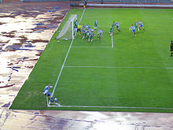Los saques de esquina fueron una innovación de las reglas de Sheffield.
Otro código que tuvo incidencia en la creación del fútbol asociación fueron las reglas de Sheffield. Si bien desde 1855 varios miembros del Sheffield Cricket Club comenzaron a practicar juegos de pelota sin reglas fijas, la fundación de este código se dio el día 24 de octubre de 1857 por Nathaniel Creswick y William Prest.30 La creación del código incluyó la formación del Sheffield Football Club, reconocido por la FIFA, con una Orden de Mérito,31 y la Football Association como el club de fútbol más antiguo del mundo.32 En 1867 fue fundada la Sheffield Football Association, actual Sheffield and Hallamshire County Football Association, órgano que rige en la actualidad el fútbol del área de Sheffield.
El código Sheffield aportó varias reglas que actualmente se utilizan en el fútbol moderno. La utilización de un travesaño de material sólido para unir los postes verticales de la portería, la introducción de los saques de esquina, los tiros libres tras recibir una falta y los saques de banda, los primeros partidos con iluminación artificial y los sistemas de desempate, incluida la noción de prórroga y el gol de oro.
Estas reglas también se utilizaron para la disputa del primer torneo de cualquier código que incluyó un trofeo: la Copa Tommy Youdan. Participaron 12 clubes de la Sheffield FA en el formato de eliminación directa y la final se disputó en Bramall Lane, actual estadio del Sheffield United Football Club. En la misma el Hallam Football Club empató sin goles ante Norfolk, obteniendo el título los primeros por 2 rogues35 a 1.36 Al año siguiente se disputó otro torneo, la Copa Oliver Cromwell, la cual quedó en manos de The Wednesday tras vencer a su rival con lo que hoy se conoce como gol de oro, luego de empatar 0 a 0 con 0 rogues a 0 en el tiempo reglamentario ante Garrick.
El fútbol asociación y la Football Association
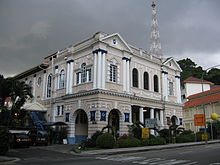 l Freemason's Hall, lugar donde se encontraba la Taberna Freemason's.Si bien es difícil establecer una fecha exacta y aceptada en general, el nacimiento del fútbol suele fecharse el 26 de octubre de 1863, día de la fundación de The Football Association. Poco antes de esa fecha Ebenezer Cobb Morley había hecho un llamado a las distintas escuelas y clubes de Londres para efectuar una reunión con el objetivo de reglamentar un nuevo código del fútbol. Desde el 26 de octubre hasta el 8 de diciembre de 1863 se realizaron seis reuniones en la Taberna Freemason'scon el objetivo de reglamentar el código y crear un órgano que rigiera el nuevo deporte. Participaron doce clubes de distintos puntos de Londres: Barnes, Blackheath, Blackheath Proprietary School, Charterhouse, Civil Services(más conocido como War Office Club),Crystal Palace (fundado en 1861, no confundir con el actual Crystal Palace),Forest of Leytonstone (futuro Wanderers FC), Kensington, NN Football Club, Perceval House, The Crusaders.
En la última reunión fue definido el reglamento del nuevo deporte, el cual recibiría el nombre de association football (fútbol asociación en español, para diferenciarlo de otros códigos de fútbol de la época. Durante las últimas reuniones el Blackheath Football Club abandonaría la FA desconforme con la prohibición de los tackles;dicho club se convertiría en uno de los fundadores de la Rugby Football Union, el máximo órgano del
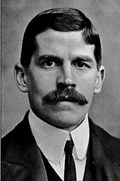 Charles Wreford-Brown, considerado el creador del término soccer.Las 13 reglas oficializadas durante las reuniones fueron creadas tomando como base el código Cambridge, el cual era considerado como el más apto por la Las reglas consideraban varios aspecto del juego: las medidas del campo de juego y las metas, el sorteo y comienzo del encuentro, las situaciones tras un gol, el gol marcado, los saques de banda, el fuera de juego, los saques de meta, las marcas, la prohibición de correr con el balón en manos, de golpear o agarrar con las manos al adversario, de utilizar las manos para lanzar o pasar el balón, de tomar el balón desde el suelo con las manos, el derecho a pasar el balón si se toma tras u na marca o el primer rebote y los materiales del calzado.
Con la creación del juego también se formó la Football Association, que hasta la actualidad rige el fútbol en Inglaterra. El primer presidente de la asociación fue Arthur Pember,mientras que el cargo de secretario lo ocupó por primera vez Ebenezer Cobb Morley
A pesar de la unificación en un solo código, las disputas sobre la creación de un código definitivo y universal continuaron hasta finales de los años 1870, particularmente con los seguidores de las 1878 se dio la fusión definitiva entre Sheffield y Londres (FA). La creación de la International Football Association Board puso fin a todas las diferencias.
En los años 1880 un estudiante y futbolista llamado Charles Wreford-Brown habría sido el creador del término soccer, palabra que se mantiene hasta la actualidad como sustantivo para denominar al fútbol asociación. El término se utiliza de la misma forma que rugger (rugby-er) es usado para denominar al rugby, pero utilizando la combinación de asocc (por association football, fútbol asociación en inglés) y el sufijo -er.
Profesionalismo y amateurismo
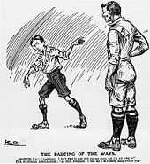 Una caricatura de la época que ilustra el rechazo al profesionalismo.Desde sus comienzos el fútbol en se caracterizó por ser amateur, sin embargo, desde la creación de la en 1871 y el cobro de boletos para presenciar los encuentros, los futbolistas comenzaron a recibir ofertas económicas por jugar. Esto recibió un amplio rechazo por parte de la Football Association, al límite de prohibir el profesionalismo en el fútbol.
El primer club con jugadores profesionales habría sido el Darwen Football Club, que en 1878 contrató a dos jugadores escoceses: James Love y Fergus Suter. La contratación pagada se mantuvo en secreto, aunque se levantaron sospechas cuando Fergus abandonó su trabajo como picapedrero. En años posteriores otros clubes siguieron los pasos de Darwen FC, aunque recibiendo suspensiones por parte de las autoridades al admitir la utilización de jugadores pagos.
En <1884 varios clubes formaron una asociación escindida de la Football Association: la British Football Association, en respuesta a la prohibición del profesionalismo. Finalmente el 20 de julio de Football Association se vio forzada a oficializar el profesionalismo, aunque mantuvo restricciones económicas, geográficas e incluso sus dirigentes desalentaban esta práctica en el fútbol. Para financiar la paga de jugadores los clubes más poderosos organizaron una serie de encuentros en el formato de todos contra todos: la Football League, la primera competición de liga de la historia.
Primeros eventos
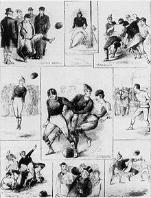 Escenas del primer encuentro oficial entre selecciones: Inglaterra 0 (30 de noviembre de 1872).Tras la oficialización del nuevo código, el 19 de diciembre de 1863 se disputó el primer partido oficial de este nuevo deporte: Richmond Football Club en un encuentro disputado en Mortlake, Londres, Inglaterra.
A nivel de selecciones nacionales la Football Association había disputado varios encuentros no oficiales entre su selección y un equipo conformado por jugadores londinense con raíces escocesas en los primeros años de existencia del fútbol asociación. El primer encuentro oficial entre selecciones llegaría el 30 de noviembre de 1872, partido que fue disputado en Hamilton Crescent (actual campo de críquet), Partick, Escocia: ante 4.000 personas Inglaterra igualaron sin goles. Ambos equipos lucieron la indumentaria que mantienen en la actualidad.
El 20 de julio de 1871< el Secretario Honorario de la Football Association, Charles Alcock, hizo un llamado para organizar un campeonato entre los clubes de la asociación: la FA Cup, el torneo más antiguo de la historia de este deporte. El 11 de noviembre de ése año, 15 equipos comenzaron la disputa de la primera edición de este torneo, la cual fue ganada por el Wanderers Football Club.
Gracias a la unificación de reglas por parte de las asociaciones británicas en 1882, que posteriormente resultaría en la fundación de la International Football Association Board, se celebraría la primera edición del British Home Championship en 1884. El torneo se realizó entre enero y marzo, y fue obtenido por la selección escocesa en forma invicta, ganando todos sus encuentros. Este torneo fue el más antiguo de la historia a nivel de selecciones hasta su desaparición en 1984, año en que la Copa América pasaría a ostentar dicho logro.
Desde que el fútbol se hizo profesional en Inglaterra en 1885, la realización de encuentros amistosos se hacía muy difícil debido a la poca organización de los clubes. Para remediar esto, William McGregor, dirigente del Aston Villa, convocó a otros clubes a una reunión el 22 de marzo de 1888 para organizar la primera competición de liga: la Football League. La competición se inició el 8 de septiembre de 1888. La primera edición contó con la participación de 12 clubes y fue obtenida en forma invicta por el Preston North End Football Club. Cada equipo disputó un encuentro como local y otro como visitante ante cada uno de los demás participantes, totalizando 22 encuentros por club.
Expansión internacional
IFAB y las reglas del juego
Desde la unificación de reglas de 1863 por parte de la Football Association de Inglaterra, cada asociación del Reino Unido de Gran Bretaña e Irlanda jugaba sus encuentros con reglas levemente diferentes, lo cual causaba problemas al momento de disputar encuentros entre sí. Para remediar esto los ingleses hicieron un llamado a las demás asociaciones para crear una serie de reglas universales. El primer paso para lograrlo se dio el 6 de diciembre de 1882, cuando en una conferencia en Mánchester las cuatro asociaciones se pusieron de acuerdo y elaboraron un juego de reglas para ser utilizado en todo el reino. La fundación del Board como tal se dio cuatro años más tarde: el 2 de junio de 1886 en Londres la Scottish Football Association (Escocia), la Football Association of Wales (Gales), la Football Association (Inglaterra) y la Irish Football Association (toda Irlanda hasta 1921 y solo Irlanda del Norte desde la división de la isla) celebraron la primera reunión oficial. El acercamiento de las Home Nations, apodo de las cuatro asociaciones, dio lugar a la creación del British Home Championship, que se comenzó a disputar en 1884 y perduró por 101 años.
En 1912 un petitorio de la FIFA para ingresar como miembro del Board fue rechazado aludiendo que el momento no era el más adecuado. Durante una reunión especial de 1913 el tema fue tratado nuevamente, aunque esta vez se dio un plazo de tiempo para que las Home Nations analizaran el tema internamente. Finalmente el 4 de abril de 1913 la FIFA pasó a formar parte del IFAB y en junio de ese mismo año participó por primera vez como miembro en una reunión oficial.
El funcionamiento de la IFAB consta de dos reuniones ordinarias: entre febrero y marzo de cada año se lleva a cabo la Reunión General Anual, donde se discuten los cambios a las reglas del juego, y entre septiembre y octubre la Reunión Anual de Negocios es el centro de debate de temas relacionados al funcionamiento del Board, pero no se permiten cambios a las reglas del juego.
Desarrollo fuera del Reino Unido
El fútbol se fue extendiendo paulatinamente al resto de los países europeos a finales del siglo XIX gracias a la actividad de los soldados, marineros, funcionarios de las colonias, hombres de negocios, ingenieros y maestros ingleses, que practicaban el nuevo deporte y promovían su difusión entre los locales, tal cual había sucedido con otros deportes, como el críquet.
Los primeros países europeos en recibir al fútbol fueron los de la zona central. Dinamarca y los Países Bajos, ambos en 1889, fueron los primeros en formar sus asociaciones. La gran colonia británica en Austria inició el fútbol en ese país, donde se destacó la presencia de Hugo Meisl, figura de la creación de laCopa Mitropa, el prototipo de los eventos europeos de clubes modernos. A finales de siglo el deporte ya se había arraigado en varios países además de los ya mencionados: Italia, Hungría e incluso Rusia. A principios del siglo XX Alemania, Bélgica, Noruega, Checoslovaquia, entre otros, también comenzarían a tener una práctica habitual del fútbol.
En América del Sur los marineros británicos introdujeron el fútbol a los habitantes del Cono Sur a partir de los años 1870, principalmente en el sur de Brasil y en la zona del Río de la Plata: Argentina y Uruguay. Paulatinamente el juego se fue expandiendo a otros países, como fue el caso de Paraguay a comienzos del siglo XX. En 1901 Uruguay y Argentina se enfrentaron por primera vez, siendo éste el primer partido internacional fuera de las Islas Británicas; este clásico se convirtió en el encuentro internacional más jugado de la historia del fútbol.
En América del Norte y Oceanía el crecimiento del deporte ha sido considerablemente más lento, aun con la gran influencia inglesa que hay en estas zonas. En Estados Unidos los primeros eventos relacionados con el fútbol datan de los años 1860. En África el movimiento colonial británico tuvo una gran notoriedad en la introducción del fútbol, pero el deporte ha tenido un crecimiento más lento en esta zona.Asia el fútbol no pudo salir del ámbito universitario hasta los años 1980, cuando el crecimiento económico y las relaciones con occidente permitieron un mejor avance del juego.
FIFA
La Fédération Internationale de Football Association, mejor conocida por su acrónimo FIFA, fue fundada el 21 de mayo de 1904 en París, Francia, por representantes de 7 países: Bélgica (Union Belge des Sociétés de Sports), Dinamarca (Dansk Boldspil Union), España (Madrid Football Club), Francia (Union des Sociétés Françaises de Sports Athlétiques), Países Bajos (Nederlandsche Voetbal Bond), Suecia (Svenska Bollspells Förbundet) y Suiza (Association Suisse de Football); Alemania (Deutscher Fußball-Bund) confirmó su afiliación el mismo día por telegrama. Su fundación comenzó a perfilarse ante la realización de los primeros encuentros internacionales entre selecciones no pertenecientes al Reino Unido de Gran Bretaña e Irlanda; las pertenecientes al mismo rechazaron la idea de un órgano mundial de fútbol. Dos días después de la fundación Robert Guérin fue nombrado primer presidente de la FIFA. El primer gran logro del organismo fue la afiliación de The Football Association como miembro pleno, a la cual se sumaron años después las otras asociaciones británicas. Durante los años 1910 se afiliaron miembros de fuera de Europa, siendo el primero de ellos Sudáfrica entre 1909 y . La realización de un torneo de carácter mundial en 1906 falló, mientras que el fútbol en los Juegos Olímpicos no tenía la envergadura esperada por la FIFA para un torneo de clase mundial.
Durante la Primera Guerra Mundial la FIFA estuvo a punto de desaparecer, aunque esto no pasó gracias al trabajo de Carl Anton Wilhelm Hirschmann. El 1921 sería una fecha de vital importancia para la historia del fútbol: Jules Rimet asumía como tercer presidente de la FIFA. En 1929 en Barcelona, Uruguay fue elegido sede de la primera Copa Mundial de Fútbol, a disputarse en 1930. Si bien Uruguay pagaría todos los gastos de los participantes, muchas selecciones europeas se abstuvieron de participar debido a la crisis post guerra que vivía el viejo continente. La Segunda Guerra Mundial frenaría nuevamente el crecimiento de la FIFA, pero gracias a los fondos recaudados por el denominado Partido del Siglo la organización pudo salir adelante. Dicho encuentro se disputó el 10 de mayo de 1947 entre Gran Bretaña y un combinado del resto de Europa. Ante 135.000 personas los británicos golearon por 6 goles a 1. Este encuentro y la realización de la Copa Mundial de 1950 en Brasil darían el puntapié inicial para la etapa de mayor éxito de la FIFA. En 1954 Jules Rimet, El padre del Campeonato Mundial, dejaría su cargo, siendo condecorado con el título de Presidente Honorario de la FIFA. Desde entonces el crecimiento de la FIFA ha sido imparable, llegando a tener 208 asociaciones divididas en 6 confederaciones.
Juegos Olímpicos
 La selección amateur del Reino Unido obtuvo el primer campeonato mundial de selecciones en 1908.
La selección amateur del Reino Unido obtuvo el primer campeonato mundial de selecciones en 1908.
La primera edición de los Juegos Olímpicos modernos, disputada en 1896, no tuvo al fútbol como evento. El deporte formó parte del calendario en 1900 y 1904 como deporte de exhibición y en los Juegos Intercalados de 1906, aunque en carácter no oficial. Todos estos torneos fueron disputados por equipos de diferentes tipos: selecciones nacionales, regionales, clubes y combinados que incluso utilizaban jugadores de más de un país en ocasiones. El Comité Olímpico Internacional reconoce las ediciones de 1900 y 1904 y las incluye en el medallero.
La edición de 1908 fue la primera de carácter oficial y reconocida por la FIFA, además es considerada la primera edición de un campeonato de nivel mundial. El título quedó en manos de la selección del Reino Unido. A partir de 1924 el torneo comenzó a ser organizado por la FIFA, y las ediciones de 1924 y 1928, ambas obtenidas por Uruguay, serían reconocidas como Campeonatos mundiales de fútbol. El torneo quedó relegado a partir de 1930 cuando se realizó la Primera Copa Mundial de Fútbol en Uruguay.
En principio el torneo estaba abierto a jugadores de cualquier nivel, pero desde 1936 hasta 1980 se limitó únicamente a jugadores amateurs. En1988 se permitió el uso de futbolistas profesionales, excepto jugadores de Europa y Sudamérica que habían participado en alguna Copa Mundial de Fútbol. En 1992 se introdujo el sistema actual: se permiten jugadores de cualquier tipo con 23 años o menos de edad, aunque se podrán presentar hasta 3 futbolistas que sobrepasen dicha edad. Desde 1996 también se celebra una edición femenina del torneo, la cual está abierta a jugadoras de cualquier condición y edad.
Copa del Mundo
 La Copa Mundial de Fútbol se erigió como el máximo evento del deporte.
La Copa Mundial de Fútbol se erigió como el máximo evento del deporte.
La incursión de la FIFA en los Juegos Olímpicos a partir de 1924 motivó la creación de un torneo propio y de mayor nivel. Gracias al trabajo de Jules Rimet, el 28 de mayo de 1928 en Ámsterdam fue aprobada la realización de una Copa Mundial de Fútbol cada cuatro años. El 18 de mayo del año siguiente en el Congreso de la FIFA en Barcelona se definió que Uruguay fuera sede de la Primera Copa Jules Rimet, a disputarse en 1930. La gran actuación uruguaya en los Juegos Olímpicos, el buen estado económico que disfrutaba el país sudamericano y la coincidencia con el centenario de la jura de la primera Constitución uruguaya llevaron a que los otros candidatos cedieran el honor al país sudamericano.
La selección local obtendría la primera edición de la Copa tras vencer a Argentina por 4 goles a 2 en el recién construido Estadio Centenario. Luego del éxito de la primera edición, la segunda edición celebrada en Italia en 1934 vio como campeón a la escuadra italiana, aunque las amenazas y dudas que generaron la realización del torneo deslucieron el título azzurro. Una situación similar ocurrió durante la Copa Mundial de Francia 1938, donde el seleccionado italiano, esta vez vestido de negro, repitió el título. El ambiente político inestable que se vivió en las últimas Copas Mundiales sería común denominador de los años siguientes, donde la Segunda Guerra Mundial llevó a la suspensión del torneo.
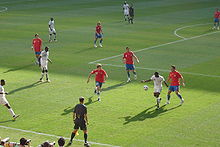 Encuentro entre la República Checa y Ghana durante la Copa Mundial de Fútbol de 2006 en Alemania.Brasil tendría el honor de llevar a cabo la primera edición de la Copa Mundial tras la guerra en 1950. La gran fiesta que se vivía en el país se vio estropeada cuando la selección uruguaya se llevó el título en el recordado Maracanazo. La Copa Mundial de Fútbol de 1954 en Suiza traería aún más momentos inolvidables. La selección húngara era la gran favorita del torneo, pero sin embargo el combinado de Alemania daría la sorpresa y se quedaría con el título en el momento que quedó inmortalizado como El milagro alemán. Tras los duros golpes recibidos en las ediciones pasadas, Brasil se eregiría como la gran potencia del fútbol mundial, particularmente por las grandes actuaciones de Pelé. Épocas posteriores mostraron un claro dominio de Alemania y Argentina, los cuales se coronaron en dos ocasiones cada uno. Brasil volvería a la gloria años más tarde tras vencer en dos de tres finales consecutivas durante el final y el comienzo del nuevo milenio. Por su parte Francia se sumaría al círculo de gloria al convertirse en el séptimo campeón mundial tras golear a Brasil en la final de la Copa Mundial de 1998 que se disputó en suelo galo.
El éxito de la Copa Mundial la convirtió en uno de los eventos más importantes del planeta, siendo el de mayor audiencia: la Copa Mundial de Fútbol de 2006 en Alemania tuvo una audiencia acumulada de más de 26 mil millones de personas. La creación del torneo masculino ha generado otras competiciones internacionales que amplían el abanico de edades y de género. Desde Copa Mundial de Fútbol Sub-20, mientras que su equivalente en Sub-17 hace lo propio desde 1985. El fútbol femenino vio realizado su sueño en 1991 cuando se realizó la primera edición de la Copa Mundial Femenina de Fútbol. A partir de 2002 también entraría en disputa la Copa Mundial Femenina de Fútbol Sub-20, la cual tendría su versión en Sub-17 a partir de 2008.